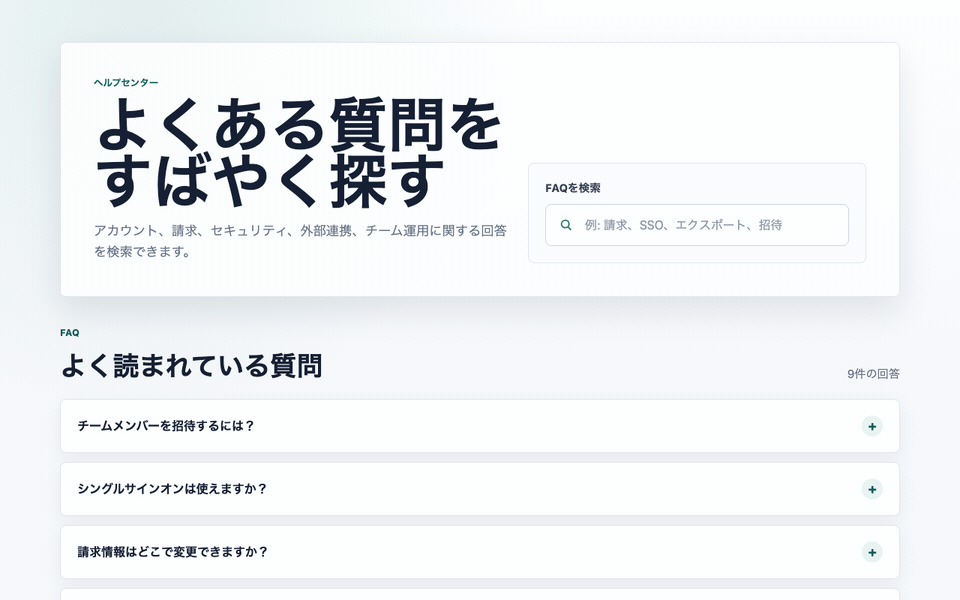
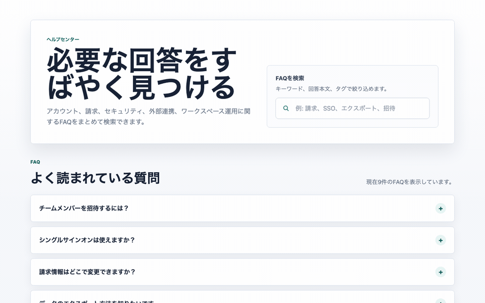

雑なFAQ検索アプリを監査して分かった、AI Task Packetに「アクセシビリティ契約」を入れるべき理由
2026-06-27 / Codex Mastery Lab 日次ドラフト
想定読了時間: 約10分
種別: Experiment / Failure / Template

操作キャプチャ
バイブコーディング版を実際にブラウザで操作したGIF。

指示を見直した版を実際にブラウザで操作したGIF。

1. 今日の問い
AI駆動開発では、Codexに「FAQ検索アプリをいい感じに作って」と頼むだけでも、それっぽいUIはかなり速く出てくる。では、その成果物は本当に後工程で読める共通説明書になっているのか。
今日の問いはこれだ。
小さなFAQ検索UIをあえて雑なプロンプトで作らせ、アクセシビリティ監査で見つかった欠陥から、AI Task Packetに事前に含めるべき項目を逆算できるか？
料理でいえば、完成写真だけを見て「おいしそう」と判断するのではなく、レシピとして他の人が再現できるかを見る。Webアプリでも同じで、画面がきれいでも、支援技術・キーボード操作・テスト・レビューが読めなければ、標準共通説明書とは言えない。
2. 仮説
今回の仮説は次の通り。
Codexへ雑に「FAQ検索アプリを作って」と渡すと、見た目と基本動作は作る。しかし、検索欄と結果リストのプログラム上の関係、no results状態、キーボード操作、検証証拠は抜けやすい。これらは後から直すのではなく、AI Task Packetの Accessibility Contract と Verification Evidence に最初から入れるべきである。
AIDD-Specの思想は「上流工程の理想論」から標準を作らないことだ。まず後工程で壊れ方を見る。壊れた箇所から、理想状態、修正指示、必要だった前工程情報を逆算する。
3. 実験環境
実行環境は以下。M4 Mac mini / 16GB RAM / 256GB SSD という制約環境で、重い依存インストールは避けた。
2026-06-27 12:16:29 JST
ProductName: macOS
ProductVersion: 26.5.1
BuildVersion: 25F80
arch: arm64
Disk: 228Gi total / 140Gi available
Codex CLI: codex-cli 0.142.3実験ディレクトリ:
/Users/tto/codex-mastery-lab/experiments/2026-06-27-accessibility-contract-vibe-faq/ログ:
/Users/tto/codex-mastery-lab/experiments/2026-06-27-accessibility-contract-vibe-faq/logs/4. 実験計画
最初に PLAN.md を作り、今回の監査カテゴリを3つに絞った。
- Accessibility
- Requirement Fit / State Behavior
- Build / Console / Verification Evidence
今回はLighthouseやaxeを入れない。理由は、今日の目的が「重い監査ツールを回すこと」ではなく、雑プロンプトで抜けた項目をAI Task Packetへ戻すことだからだ。依存なしの静的監査でも、前工程に戻すべき欠陥は十分に見える。
5. 実際にCodexへ渡した雑プロンプト
Codexには以下をそのまま渡した。
In this git repo, create a tiny static FAQ search app under experiments/2026-06-27-accessibility-contract-vibe-faq/vibe-app.
Use only HTML, CSS, and vanilla JavaScript. Make it look like a polished SaaS help center.
Include at least 8 FAQ items and a search box that filters questions live.
Keep it simple. Do not install dependencies. Do not modify files outside that vibe-app directory. Then exit.実行コマンド:
codex exec --sandbox danger-full-access "In this git repo, create a tiny static FAQ search app under experiments/2026-06-27-accessibility-contract-vibe-faq/vibe-app. Use only HTML, CSS, and vanilla JavaScript. Make it look like a polished SaaS help center. Include at least 8 FAQ items and a search box that filters questions live. Keep it simple. Do not install dependencies. Do not modify files outside that vibe-app directory. Then exit."Codexは vibe-app に3ファイルを作った。
index.html 45 lines
styles.css 248 lines
app.js 89 linesCodexの最終報告はこうだった。
Created the static FAQ search app under:
experiments/2026-06-27-accessibility-contract-vibe-faq/vibe-app/index.html
It includes HTML, CSS, and vanilla JS only, with 9 FAQ items and live filtering.
No dependencies installed. I only created files inside the requested vibe-app directory.ここまでは良い。依存なし、指定ディレクトリ内、FAQ 9件、ライブ検索あり。雑プロンプトとしてはかなり優秀だ。
6. 生成されたコードの良かった点
まず、Codexを公平に評価すると、vibe-appには良い点も多かった。
<form class="search-panel" role="search">
<label for="faq-search">Search the help center</label>
<div class="search-box">
<svg aria-hidden="true" viewBox="0 0 24 24" focusable="false">
...
</svg>
<input id="faq-search" type="search" autocomplete="off" placeholder="Try billing, SSO, export, invite...">
</div>
</form>label for="faq-search"がある- SVGは
aria-hidden="true"/focusable="false" role="search"があるaria-live="polite"の結果件数表示がある- FAQは
details/summaryを使っており、標準HTMLの開閉UIに寄せている
つまり、「AIはアクセシビリティを完全に無視する」という話ではない。むしろ、明示していない割にはかなり良い。しかし、後工程で監査すると「標準仕様としては足りない」部分が出る。
7. 静的監査を実行した
まずJavaScriptの構文チェック。
node --check experiments/2026-06-27-accessibility-contract-vibe-faq/vibe-app/app.jsこれは通った。次に、HTML/CSS/JSを軽く静的監査した。チェックしたのは、検索欄ラベル、結果件数live region、リストセマンティクス、aria-controls、aria-describedby、フォームsubmit抑止、:focus-visible などだ。
結果:
PASS: HTML lang exists
PASS: Search input has label for faq-search
PASS: Result count live region exists
FAIL: FAQ list has explicit list semantics
FAIL: Search input declares controlled results
FAIL: No-result state is programmatically referenced by input
FAIL: Form submit is prevented in JS
FAIL: Focus visible rule exists
PASS: FAQ item count >= 8
PASS: No dependency import statementsHTTP serverでも配信確認だけ行った。
python3 -m http.server 8765 --directory experiments/2026-06-27-accessibility-contract-vibe-faq/vibe-app
curl -s http://127.0.0.1:8765/ -o experiments/2026-06-27-accessibility-contract-vibe-faq/logs/http-index.html確認結果:
bytes 1728
has title Trueここで大事なのは、「画面が表示される」ことと「後工程が監査できる」ことは別だという点だ。
8. 欠陥1: FAQ一覧がdivで、コレクションとして読めない
vibe-appのHTMLはこうだった。
<div id="faq-list" class="faq-list"></div>JS側で details を追加しているが、FAQ全体は ul/li ではない。人間の目にはカード一覧に見える。しかし、支援技術や静的監査にとっては「FAQ項目のコレクション」であることが曖昧になる。
理想状態:
<ul id="faq-list" class="faq-list"></ul>各項目は li として追加する。カスタム要素を使うなら、少なくとも role="list" / role="listitem" が必要になる。
逆算すると、これは実装後に「ulに直して」ではなく、AI Task Packetの accessibility_contract.collection_semantics に入れるべき項目だ。
9. 欠陥2: 検索欄と結果領域の関係がプログラム上つながっていない
vibe-appの検索欄はラベル付きで悪くない。しかし、検索欄がどの領域を制御しているのかは明示されていない。
不足していたもの:
aria-controls="faq-list"
aria-describedby="search-help result-status no-results"人間には「この検索欄はFAQを絞り込む」と分かる。しかし、AIが作るUI標準としては、視覚的配置だけに頼ってはいけない。検索欄、ヘルプテキスト、結果件数、no results状態が、DOM上でも関係として読める必要がある。
これは料理でいえば、材料名はあるのに分量や手順が書かれていない状態に近い。
10. 欠陥3: Enterキーの挙動が仕様化されていない
vibe-appにはフォームがあるが、submitイベントを抑止していなかった。
searchInput.addEventListener("input", filterFaqs);ライブ検索では、Enterキーでページがリロードされると、キーボードユーザーの文脈が壊れる可能性がある。静的HTMLではブラウザ既定動作によりGET送信・再読み込みに近い挙動になることがある。
理想状態:
form.addEventListener("submit", (event) => {
event.preventDefault();
});この欠陥は、AIが賢いかどうかではなく、前工程で「Enterキーの期待挙動」を渡していないことが原因だ。AI Task Packetには keyboard_interactions が必要になる。
11. 欠陥4: 検証証拠が成果物として残らない
vibe promptでは、Codexに「作って」とは言ったが、「何を実行して合格とするか」を渡していない。
結果として、Codexはファイル作成とgit status確認はしたが、アクセシビリティ契約を検証するコマンドは残さなかった。
AIDD-Specでは、これは Verification Evidence の欠落である。
理想状態:
quality_gate:
required_commands:
- node --check path/to/app.js
- python3 path/to/audit_static.py path/to/app小さなUIでも、最低限「何をもって完了とするか」を実行可能な形にする必要がある。

12. 逆算してAI Task Packet v0.1を作った
監査結果から、次のAI Task Packetを作った。
# AI Task Packet v0.1: Accessible FAQ Search
## Functional requirements
- At least 8 FAQ items.
- Search filters live across question, answer, and tag.
- Empty query shows all FAQs.
- No-result query shows a visible no-results message.
- Pressing Enter inside the search form must not reload the page.
## Accessibility Contract
- The search input must have a visible label.
- The search input must declare `aria-controls="faq-list"`.
- The search input must declare `aria-describedby` pointing to helper text and result status/no-result status as appropriate.
- The result count must be in an `aria-live="polite"` region and include the query context when a query exists.
- FAQ collection must expose list semantics (`ul/li` or equivalent `role="list"/"listitem"`).
- FAQ toggle controls must be keyboard-operable and retain visible focus.
- CSS must include a `:focus-visible` rule for keyboard focus evidence.
- Decorative icons must be `aria-hidden="true"` and `focusable="false"`.
## Quality Gate / Verification Evidence
node --check experiments/2026-06-27-accessibility-contract-vibe-faq/fixed-app/app.js
python3 experiments/2026-06-27-accessibility-contract-vibe-faq/audit_static.py experiments/2026-06-27-accessibility-contract-vibe-faq/fixed-app
これをCodexに渡して、fixed-app を作らせた。
実行コマンド:
codex exec --sandbox danger-full-access "Read experiments/2026-06-27-accessibility-contract-vibe-faq/AI_TASK_PACKET_v0.1.md. Implement exactly that packet. Keep all changes inside experiments/2026-06-27-accessibility-contract-vibe-faq/fixed-app except an optional audit_static.py directly under the experiment directory. Do not install dependencies. Then run the verification commands if possible and report results."13. 修正後の結果
Codexは fixed-app と audit_static.py を作り、検証まで実行した。
こちらでも再実行した結果:
## fixed node syntax check
## fixed static audit
PASS: HTML lang exists
PASS: Search input has visible label
PASS: Search input controls faq-list
PASS: Search input references helper text
PASS: Search input references result status
PASS: Search input references no-result status
PASS: Result count live region exists
PASS: FAQ collection uses ul/list semantics
PASS: FAQ item data count >= 8
PASS: FAQ toggles use buttons
PASS: Form submit is prevented in JS
PASS: CSS includes focus-visible rule
PASS: Decorative SVG icons are hidden
PASS: No dependency import statements差分として重要なのは、単にHTMLが変わったことではない。Codexに渡した前工程情報が変わると、成果物の構造が変わったことだ。
fixed-appでは検索欄がこうなった。
<input
id="faq-search"
type="search"
autocomplete="off"
placeholder="Try billing, SSO, export, invite..."
aria-controls="faq-list"
aria-describedby="search-help result-status no-results"
>FAQ一覧もこうなった。
<ul id="faq-list" class="faq-list"></ul>そしてJSにsubmit抑止が入った。
form.addEventListener("submit", (event) => {
event.preventDefault();
});14. 標準フォーマットでの監査結果
今回の代表的なfindingをAIDD-Specの標準形式で記録すると、こうなる。
category: Accessibility
finding: The search input did not declare which result region it controls or which status text describes it.
severity: high
observed_by: static HTML audit
ideal_state: Search input is programmatically connected to result list, helper text, result count, and no-result state.
fix_instruction: Add aria-controls="faq-list" and aria-describedby="search-help result-status no-results" to the input; keep referenced elements present in the DOM.
needed_upstream_info:
- Accessibility Contract
- State Design: empty/loading/error/success
- Copy Contract
standard_update:
document: AI Task Packet
field: accessibility_contract.search_relationships
codex_prompt_delta: |
The search input must declare aria-controls for the results container and aria-describedby for helper, live result status, and no-result status text.
verification:
command: python3 experiments/2026-06-27-accessibility-contract-vibe-faq/audit_static.py experiments/2026-06-27-accessibility-contract-vibe-faq/fixed-app
expected: PASSこの形式にすることで、欠陥が単なる反省で終わらず、次回の前工程成果物に戻る。
15. AIDD-Specへの反映
今日の結果を受けて、標準仕様として以下を追加した。
/Users/tto/codex-mastery-lab/standards/aidd-spec-ai-task-packet-standard-v0.1.md追加した主なフィールド:
accessibility_contract:
relationships: []
collection_semantics: []
keyboard_interactions: []
focus_evidence: []
quality_gate:
required_commands: []
verification_evidence:
files_to_attach: []
logs_to_save: []ここでのポイントは、Accessibility Contractを「善意のチェックリスト」にしないことだ。Codexに渡せる実装条件、監査できるDOM条件、再実行できるコマンドに落とす。
16. CTO視点の考察
今回の実験で最も重要だったのは、Codexが失敗したことではない。むしろCodexは、雑な指示に対してかなり良いものを出した。
問題は、雑な指示でも「それっぽく良いもの」が出てしまうことだ。
これはAI駆動開発の危険なところで、成果物の表面品質が高いほど、後工程の欠陥が見えにくくなる。だから、AI時代の共通説明書には次が必要になる。
- UI部品の見た目だけでなく、支援技術との関係を書く
- 画面状態だけでなく、状態遷移時に読み上げるテキストを書く
- キーボード操作の期待挙動を書く
- 完了条件を「見た目」ではなく「コマンドで再現できる証拠」にする
料理でいうなら、完成写真だけを渡すのではなく、材料表、手順、火加減、確認チェックリストまで渡す。そのソフトウェア版がAIDD-Specであり、Codexへ渡す最小実装単位がAI Task Packetだ。
17. SaaS化するなら何を作るか
AIDD Control PlaneとしてSaaS化するなら、今回の学びはそのまま機能になる。
- UI種別として「検索UI」を選ぶ
- SaaSが必須のAccessibility Contractを提示する
aria-controls/aria-describedby/ live region / list semantics をフォームで入力させる- その入力からAI Task Packetを生成する
- Codex実行後、静的監査を自動実行する
- FAILした項目から修正プロンプトと標準仕様更新案を生成する
価値は「AIにコードを書かせる」ことではない。AIが作ったものを検査可能な共通説明書レベルへ引き上げ、次回から最初に渡す仕様を改善することだ。
18. 明日から使えるチェックリスト
検索UIをAIに作らせる前に、最低限これをAI Task Packetへ入れる。
- 検索欄にvisible labelがあるか
- 検索欄が
aria-controlsで結果領域を指しているか - 検索欄が
aria-describedbyでヘルプ、結果件数、no resultsを参照しているか - 結果件数が
aria-live="polite"で更新されるか - 結果一覧が
ul/liまたは equivalent role で表現されるか - no results状態の表示文言が決まっているか
- Enterキーでページ遷移・reloadしないか
- キーボードフォーカスが
:focus-visibleで見えるか -
node --checkなど最低限の検証コマンドがあるか - 監査結果をログとして保存するか
19. 次回検証
次回は、同じFAQ検索アプリに対して、静的監査ではなくaxe / Lighthouse / Playwrightの軽量監査をどこまでM4 Mac miniで現実的に回せるかを調べたい。
今日の結論は明確だ。
Codexのアウトプット品質を上げる最短距離は、プロンプトを長くすることではない。後工程の監査で必要になる情報を、AI Task Packetの標準フィールドとして前工程に戻すことである。
今日の小さなFAQアプリは、その最小の証拠になった。